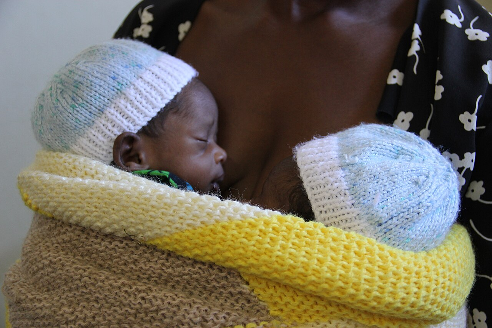
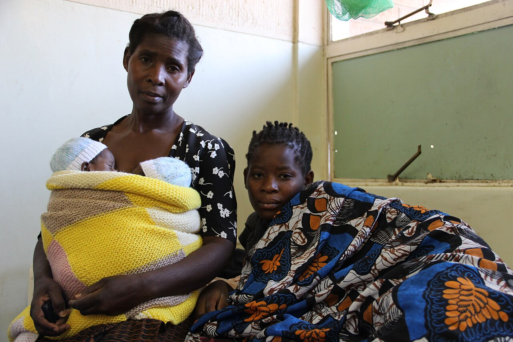
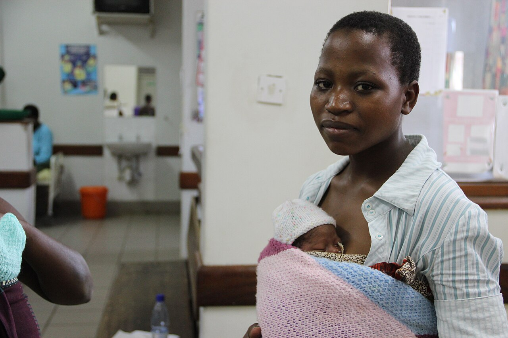
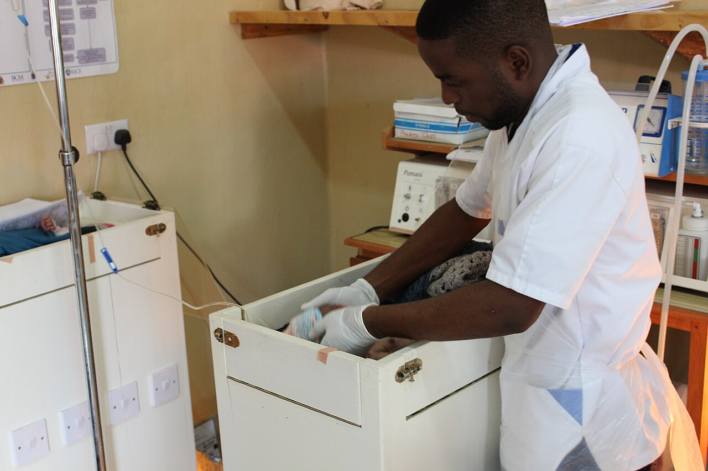
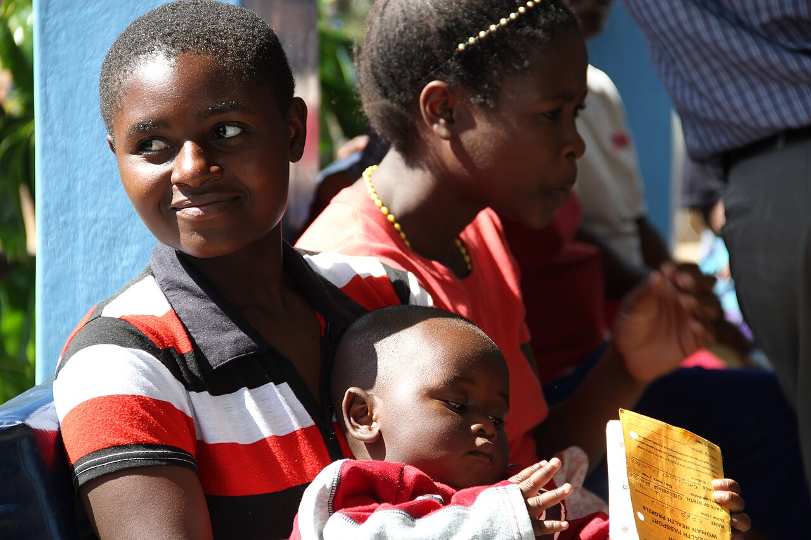
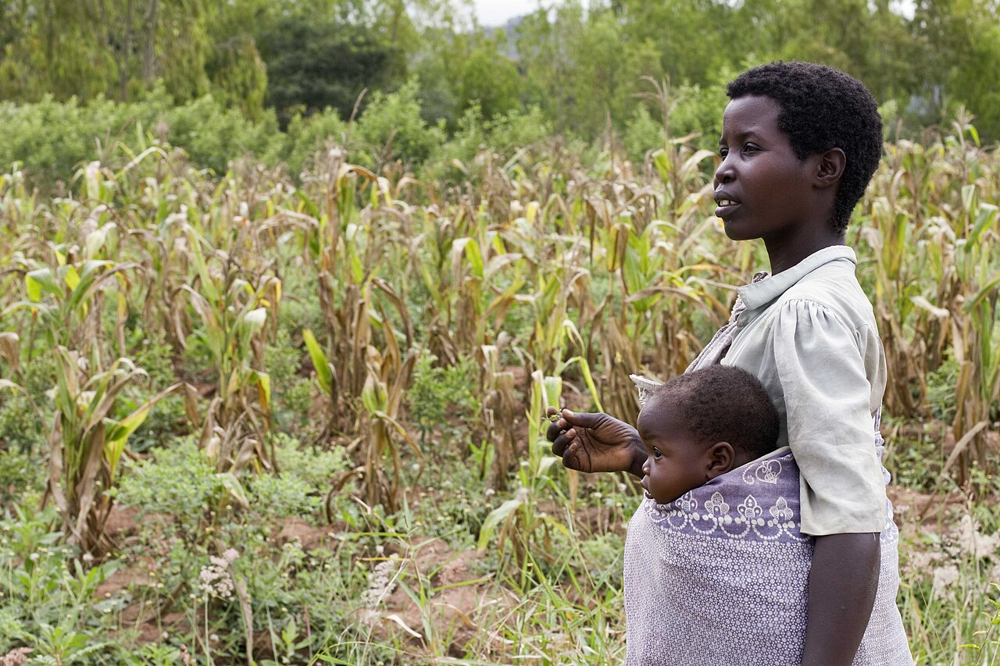

Protection & Safety
We prioritize the immediate safety and safeguarding of premature, low-birth-weight, and high-risk newborns alongside mothers navigating crisis—creating secure environments where early life is protected.
Learn MoreEvery mother and newborn deserves the chance to survive and thrive. Wings works alongside families and healthcare teams in Malawi to protect high-risk infants, support mothers recovering from complicated births, and provide compassionate family-based care during the most fragile moments of early life.

Responsive care pathways for mothers and newborns facing urgent crisis
Focused on safeguarding early life, maternal recovery, and family stability
Connecting UK advocacy and partnerships with maternal healthcare in Malawi
Inspired by community-rooted maternal care, our women-led programmes bridge the gap between hospital delivery and home recovery—ensuring vulnerable newborns, postpartum mothers, and extended caregivers receive continuous support.

We prioritize the immediate safety and safeguarding of premature, low-birth-weight, and high-risk newborns alongside mothers navigating crisis—creating secure environments where early life is protected.
Learn More
Our care model centers on empathy, clinical guidance, and respectful accompaniment—supporting women recovering from complicated deliveries and ensuring every newborn receives attentive postnatal follow-up.
Learn More
We walk beside mothers, grandmothers, and extended caregivers to strengthen household resilience—helping families access essential infant supplies, nutrition guidance, and community health services.
Learn MoreOur mission is directly aligned with United Nations Sustainable Development Goal 3: Good Health and Well-being, which calls for reducing maternal mortality and ending preventable deaths of newborns and children under five.
In Malawi, complications following childbirth or lack of postnatal follow-up can place both mothers and infants at severe risk. By combining hospital-linked referrals with family-centered care in the community, Wings helps protect mothers and babies when they are most vulnerable.

Working alongside local nurses, midwives, and families in Malawi to advance safe motherhood, newborn survival, and accessible postnatal care.
Our Work in MalawiBehind every maternal health programme is a mother, a newborn, and a family working to overcome crisis. These programme story templates illustrate how timely care supports families in Malawi and are structured for verified field case studies.

Case Study PlaceholderA dedicated slot for a verified beneficiary story documenting how close neonatal monitoring, warmth, and essential care packages support premature and vulnerable newborns after hospital discharge.
Read Story
Case Study PlaceholderA dedicated slot for a verified maternal recovery story highlighting how routine postnatal checkups, nurse visits, and compassionate guidance help mothers heal after complicated childbirth.
Read Story
Case Study PlaceholderA dedicated slot for a verified family support story illustrating how practical nutrition assistance and community health outreach empower extended families caring for vulnerable infants.
Read StoryConnect with our team to support vulnerable newborns and mothers in crisis, partner on maternal health initiatives in Malawi, or enquire about our First 100 Days programmes.